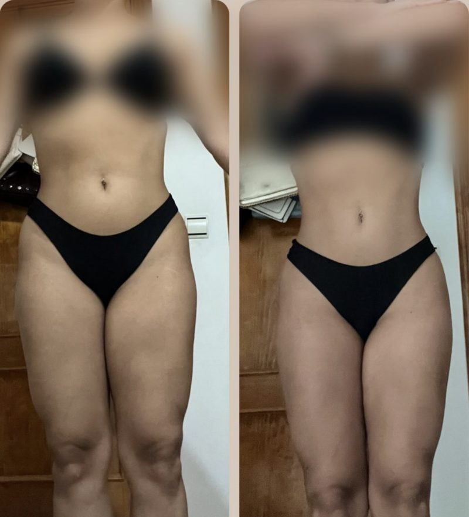
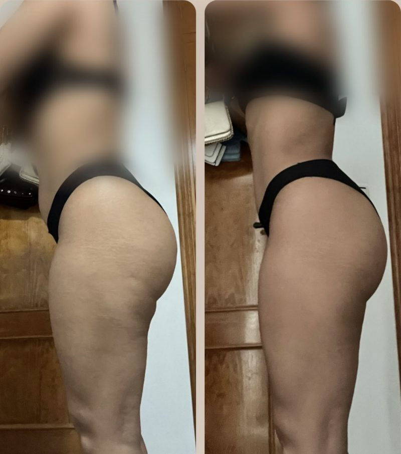
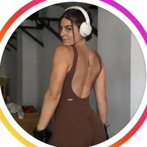
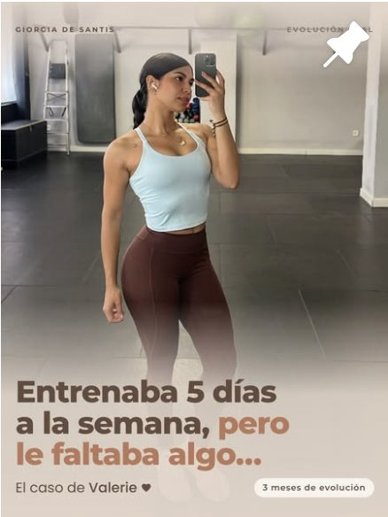

Ordenar
Dejas de improvisar: tu plan encaja en tus horarios reales (turnos, hostelería, hijos) y aprendes la técnica base. Tú: los entrenos que caben en tu semana, 3 comidas base y tu revisión.
Ya entrenas, o lo has intentado. Guardas rutinas y recetas, empiezas el lunes con ganas… y cuando la semana se tuerce, lo dejas. No te falta fuerza de voluntad: te falta un plan que se adapte a tu vida, y no al revés. Entreno con estructura y técnica, comida sin planes cerrados y revisión 1:1 cada semana.
El formulario son 2 minutos y lo leo yo personalmente.


No te ha faltado intentarlo. Te ha faltado un plan pensado para tu vida real.

No empecé a entrenar porque amara mi cuerpo, sino porque durante muchos años intenté cambiarlo.
Durante años el gimnasio fue para mí una herramienta para adelgazar y compensar. Pasé por un trastorno de la conducta alimentaria y sé lo que es sentir que nada es suficiente. Lo que me cambió no fue hacer más: fue dejar de improvisar, entender lo que hacía y ser constante incluso sin motivación.
Y aun así he tenido semanas malas, como todo el mundo. Entrenamientos al 100 %, al 50 % y días en los que simplemente no podía. Y no he vuelto al punto de partida. Eso es lo que te enseño. Estos fueron mis tres grandes errores, y cómo te los ahorras:
Primero ordenamos tu semana, luego progresas aunque la semana se tuerza y al final sabes cuidarte sin tenerme detrás.
Mujeres de 25 a 45 con trabajo, turnos o familia que ya entrenan o lo han intentado, pero empiezan y lo dejan cuando la semana se tuerce. Estructura, técnica y comer sin planes cerrados, para que cuidarse deje de depender de la motivación y de hacerlo perfecto.
Qué pasa: Dejas de improvisar: el plan encaja en tus horarios reales y aprendes la técnica base.
Qué haces tú: Los entrenos que caben en tu semana, 3 comidas base y tu revisión semanal.
Qué pasa: Suben las cargas y tu cuerpo cambia de forma. Las semanas malas ya no te sacan del plan.
Qué haces tú: Apuntas cargas y, cuando la semana se tuerce, tiras de tu versión al 50 % en vez de dejarlo.
Qué pasa: Entiendes el porqué y sabes ajustar sola cenas, viajes y semanas caóticas.
Qué haces tú: Ajustas tú con mi supervisión y dejamos listo tu plan para seguir.
Tu sello · Plan 100/50: cada clienta tiene su semana al 100 % y su versión al 50 % para las semanas caóticas. Al 50 % también cuenta.
Prueba: Irene trabaja en un hospital con turnos que cambian cada semana. En unos seis meses dejó de depender de la motivación.
Dejas de improvisar: tu plan encaja en tus horarios reales (turnos, hostelería, hijos) y aprendes la técnica base. Tú: los entrenos que caben en tu semana, 3 comidas base y tu revisión.
Suben las cargas y tu cuerpo cambia de forma. Cuando la semana se tuerce, tiras de tu versión al 50 % en vez de dejarlo todo.
Entiendes el porqué de cada cosa y sabes ajustar sola cenas, viajes y semanas caóticas. El objetivo es que un día no me necesites.
En el gimnasio, con la estructura de tu semana real. Cargas apuntadas para que sepas que avanzas.
Me mandas tus vídeos y te corrijo: entrenas seguro y cada repetición cuenta.
Comidas base, variedad y recetas fáciles. Aprendes a comer, no a seguir un papel.
Entreno, comida y lo que pasa fuera del gimnasio. Y mis respuestas a tus dudas del día a día.
Entrenaba de forma irregular y su semana nunca era igual. Su mayor cambio fue mental: pasó de depender de la motivación a tener los hábitos integrados.

Valerie · ya entrenaba · 3 mesesEntrenaba 5 días a la semana, pero le faltaba estructura. Una de mis clientas más constantes, y su cambio físico ha sido muy evidente.
"A veces, el cambio no está en hacer más, sino en darle una dirección a todo ese esfuerzo."
"Me noto menos pesada tras las comidas, más ligera y con más energía." · "Estás siempre atenta a mí y me ayudas cuando tengo dudas." · "Me adaptas los entrenos cuando lo necesito."
Las condiciones exactas (cumplimiento y revisiones) se detallan en el contrato.
2 minutos. Me cuentas tu semana real, tu objetivo y lo que has probado.
Si encajamos, te llamo para ver tu caso y explicarte cómo lo haríamos.
Tu Plan 100/50 hecho para ti y tu primera revisión fijada.
Lo leo yo personalmente. Si encajamos, te escribo para hablar.
Es justo para ti. El plan se construye sobre tus horarios reales y tienes una versión al 50 % para las semanas imposibles. Un plan rígido no sirve si tu semana nunca es igual.
Dirección: estructura, técnica corregida y progresión que se apunta. Muchas de mis clientas ya entrenaban 4 o 5 días y no veían el cambio que buscaban.
No. Trabajamos con comidas base, variedad y recetas fáciles para que aprendas a comer. Una cena fuera o un fin de semana no rompen nada.
Lo entiendo de primera mano, y por eso trabajo desde el respeto y sin obsesión. Si ahora mismo estás pasando por un trastorno de la conducta alimentaria, lo primero es un equipo sanitario especializado; si te acompaña, puedo ayudarte con el entreno en coordinación con ellos.
Sí. Tienes tu plan, tu revisión cada semana, corrección de técnica por vídeo y respuesta a tus dudas. Seguimiento real y humano, 1:1.
Si cumples lo planificado y envías tus revisiones y en la fase 1 no progresas, seguimos gratis hasta que lo hagas. Queda por escrito en el contrato.
Depende de tu caso y del plan que necesites. Rellena el formulario y te lo explico en la llamada.
Contesto yo personalmente a cada mensaje.